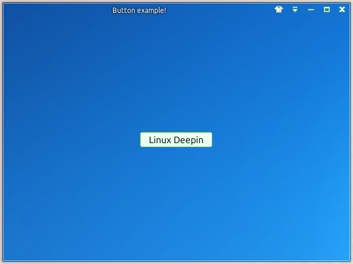
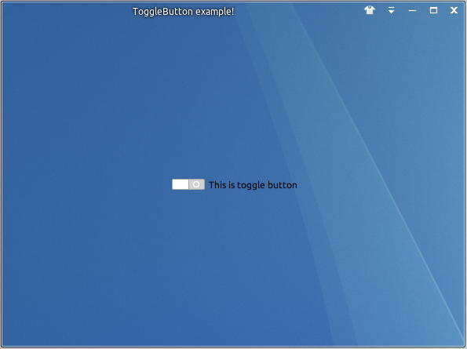
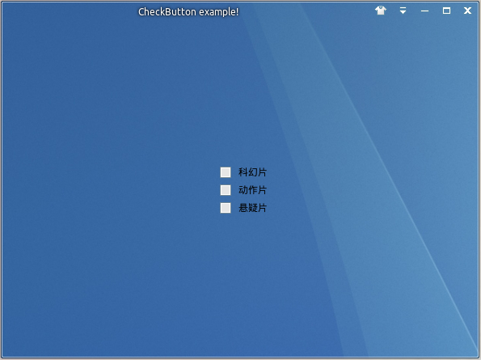

王勇 于 2013年夏
在我写这本书的时候， 在中国武汉有这么一群斗士们， 他们在为中国Linux操作系统这个梦想默默的战斗着:
他们回家敲代码到半夜早已是家常便饭，他们每天都面临巨大的压力和工作量， 他们每天都面对新功能和无数Bug奋斗到深夜。
他们每天都游离于各种系统底层问题， 编译的刷屏陪他们经历了无数个日夜， 只为用户能稳定的运行系统。
他们面对操作系统级别的复杂设计时， 面对设计上各种苛刻限制， 他们永远展现的是自信和微笑。
他们细心的聆听用户的意见， 即使是最细小的用户需求都不放过。每当用户沉浸在正式版发布以后的欢喜中时， 他们早已背好行囊继续前行， 因为他们知道即使非常努力， 相对于完美仍然不够 ...
在这么一个浮躁和功利的现实社会， 面对无数的误解和嘲笑时， 他们没有时间停下来打口水仗， 因为他们知道完美的产品才是最好的回击！如果有一天我们都年近古稀， 回忆起现在年轻的时候， 我们能无怨无悔的说：
我们没有浪费时间在抱怨和无奈中
我们把自己最好的青春奉献给自己最热爱的梦想
我们在尘归尘、土归土的时候还能给这个世界留下了贡献和回忆致现在仍然奋斗在一线的深度兄弟姐妹们， 为梦想加油！
Linux 从1991年诞生到现在的20多年已经深入了我们生活的方方面面，
从个人电脑到超级计算机， 从电视机顶盒到我们天天把玩的手机、平板，
甚至在各种毫不起眼的地方（地铁， 公交车站， 售货机， 电子广告牌等）都在运行着Linux。全世界的黑客每天都在通过自己过人的天赋和勤奋向世界证明:
即使我们分散在世界各地， 即使我们互不认识，我们依然能通过无私和正能量建造世界上最伟大的操作系统！
Linux 从出生就烙下深深的技术烙印， Linux 从内核、驱动、底层基础库到各种变态工具中无不展现出超强的技术实力
这也是Linux社区深深自豪的地方， Linux天生高效灵活的技术特质很容易就能夺取服务器、嵌入式、超算这些依赖后台技术的市场除了 Android 系统外， Linux在桌面这种直接面向用户体验的市场时却节节败退 （市场份额最有话语权）， 究其原因：
Linux社区缺少技术牛人？
Linux社区的合作开发有问题？
Linux社区缺少能美化界面的设计师？我觉的都不是， Linux之所以在桌面上奋斗了十年不能竞争过 Microsoft 和 Apple 的最大原因是：
我们没有真的为普通用户的需求而思考
我们没有为了完美的用户体验而努力!我们总是以技术牛人自居， 我们总是狂妄地以自己的标准来代表用户，
我们真的从世界上那些 99% 技术不如我们的人的角度去思考过问题吗？
技术应该给世界大多数人带来更多简单的生活， 而不是只是为了做有最多牛X技术堆砌而体验极差的产品，
Mac 早就明白 ”少即是多的设计能赢得大多数用户“ 的道理我们总是鄙视那些做UI的， 认为他们不过是换皮肤而已， 但是我们是否可知道：
一个丑陋没有经过任何排版设计的界面简直就是对用户的煎熬
一个交互体验细节极差的产品即使技术再牛X， 该难用还是难用！我们应该为了完美的用户体验不放过任何一个细节， 不放过哪怕一个像素的误差， 要做就做最好的!
Linux 之所有输了桌面之战， 不是因为我们没有努力，
而是大多数高手以为我们在正确的路上战斗， 我们输在正确认识用户交互体验的理念上了。为什么我需要写这本书？
- 让更多的热爱Linux的开发者能够开发出商业级的应用，从而壮大Linux的应用圈。
- 在Linux社区建立做产品的正确理念， 激励更多的开发者加入制造Linux高质量应用的行动中去。
- 向全世界传播Linux开源运动的伟大。
这本书不是一本讲解怎样进行初步编程的入门书籍，
本书主要是给有图形编程经验的编程人员提供全方位的方法来构建高质量的应用程序， 所以需要读者至少熟练下面的基本技术：C语言编程
Python语言编程
GTK+图形编程读者朋友们可以通过系统学习以下书籍来掌握这些基本技术：
《C程序设计语言》 (The C programming language)
《Python核心编程第二版》 (Core Python programming)
《GTK+开发基础》(Foundations of GTK+ development)
本书中所有代码都在 Linux Deepin 下进行测试， 书中所有的源代码都可以在 example 目录下找到.
书中的源代码严格遵循GPL3协议， 欢迎读者们利用代码进行二次开发， 但同时请遵守GPL3协议的开放你的源代码。
传统的Linux应用程序一般都是由开源技术爱好者主导， 他们一般都是在校大学生或者专业的工程师在业余时间完成的，
这些人都是非常富有创造力的工程师， 他们通过自己的热情做出了很多技术上非常牛X的产品出来，
在Linux刚开始发展的时候， 这些应用程序对Linux的发展起到了巨大的推动作用。但是， 大多数开源程序都会面临下面的几个问题：
很多项目只是作者的爱好或者学习的项目， 一般做到 demo 级别就不再进步
或者原作者毕业以后， 没有时间再维护项目继续向前发展， 很多很有潜力项目因为原作者的离去而衰落很多开源应用软件都只是无限制的堆砌功能， 项目的目标是我要有所有功能， 到最后越来越臃肿
很多开源项目并没有专门的设计师来来优化软件的UE， 让复杂的功能在合理的位置展示以简化交互流程
很多开源项目并没有专门的设计师做整体的UI控件、布局和用色进行优化， 做出的产品从UI上说只能是中规中矩
Linux发展到今天， 用户对一个好的应用要求非常高， 那么Linux需要做到什么样的应用才能吸引用户：
我们应该做一个完全功能的软件能满足用户的需求， 而不是一个又一个半成品， 太多的半成品在深深伤害着用户对Linux的信心
一个完美的应用应该面向使用场景做到恰到好处, 学会对产品做减法， 而不是功能的堆砌，
完美的标准就是： 没有任何功能可以去掉了， 而不是还可以添加更多的功能我们应该为普通小白用户做产品， 而不是为Linux专家做产品，
只有没有太多计算基础的用户能理解才能带来更多的用户， 而不是技术牛人的小众玩物一个完美的应用应该具有最简单的交互流程， 我们要经常问自己，
流程能不能再简单一点， 能不能做到不用任何学习就能理解，
而不是无穷的菜单和对话框， 经常看到很多Linux应用程序不知道怎么在合适的地方设计功能时，
只是简单的把功能放到工具栏和菜单栏， 或者一层又一层的对话框， 菜单和对话框都是转移用户焦点的设计，
太多只会导致用户的交互流程不能顺畅的运行， 最终也会增加应用整体使用的复杂性。Linux应用应该具有并超越 Windows 和 Mac 的美观度才能对普通用户有一见倾心的吸引力，
UI的美观和细致永远都是高质量应用应该具备的基本条件。
Linux社区的一大特色就作者不但是构建者， 同时也是最终用户，
在很多专业领域， 特别是编程领域， 这样的产品开发思维能开发出非常伟大的产品， 比如 emacs/vi, blender, gimp 等。Linux社区从来不缺乏专业性的好用工具， 但是在缺乏太多太多对普通用户足够易用的应用，
究其原因还是Linux社区内缺乏足够有能力为普通用户开发产品的应用开发者。那么应用程序开发者应该怀着怎样的理念去开发用户喜欢的产品呢？
1. 开发者本人应该是一个非常热爱生活的人， 善于和普通人沟通的人，
只有我们真正了解了产品背后的人性心理并深入了解用户的需求后才能做出好用的产品。
在现代这个资讯消费的时代， 简单的人性分析就是， 用户都是：
- 懒惰的， 如果能动一下手指就能完成的任务， 用户绝对不愿意动第二下。
- 没有耐心的： 如果你的产品不能让用户在第一分钟内喜欢上， 用户很难再次使用你的产品。
- 不爱学习的： 他们更希望能在马桶上的时间就能学到东西， 他们不愿花几个月去思考Linux背后的原理。
- 爽比功能更重要： 优秀的应用和普通应用的区别就是， 你的产品用着就是爽！
2. 开发者要认同， 一个易用的产品不但需要有强大技术基础，
还要有优秀的设计和体验细节， 光是技术做出的产品都太逻辑化了， 没有感染用户的生命力。3. 开发者要时刻提醒自己： 到底谁才是我们的目标用户？
做到这一点很难， 很多开发者都是以自我来代表用户的需求了4. 开发者要有底线： 不是每一个用户的需求都要添加的，
开发者要懂的：
- 我们的产品是面向应用场景而做的， 而不是要做一个全功能的产品。
- 真正吸引用户的是满足应用场景的核心功能， 而不是不重要的功能和重要功能都堆砌在界面中。
- 要学会把核心功能放在显眼的位置， 非核心功能放在不显眼的角落， 砍掉看似有用但是用户不会用的功能。
- 我们的产品应该是恰大好处的自信， 无限制的加功能源于不自信， 止步于臃肿没落。
5. 开发者要有一颗坚强的心和抗吐槽的能力，
用户批评你那是喜欢你的程序， 如果你开发的应用他用都不想用， 他更加懒得吐槽你
Linux和任何其他软件开发模式最大的不同就是它的开放性， 开发者之间可以非常方便的进行技术交流，
开发者和用户之间通过社区会有大量的交流， 让用户在产品初期就可以介入讨论。
这种开放式的开发模式， 不但能极大提高开发者效率， 也能通过和用户之间的交流进行快速的产品缺陷更正。一个良好的开发社区氛围能极大的促进产品的发展， 而建立一个良好的开发社区氛围关键点在于：
- 开放
- 包容
- 实干
那么一个良好的开发社区应该具有具体怎么做才能形成正能量呢？
1. 开发者和用户要有良好的沟通， 开发者在保证功能稳定的前提下应提前发布一些预览版让用户尝鲜，
很多设计之初没有考虑到的问题在这个阶段能够充分的暴露出来， 以供后续版本改进。2. 开发者之间要相互合作， 互相学习对方的优势技术做出自己产品的特色来，
千万不要像很多Linux开源社区， 都认为自己是最好的， 其他的都是垃圾，
这个世界上没有最好的产品， 只有最适合用户的产品。3. 用户要对开发者要有足够的耐心， 不要一味的吐槽狂喷，
开源软件一般都是免费使用的， 一个软件投入了作者和制作团队巨大的艰辛和努力，
作为产品使用的伸手党我们该对开发者有更多的包容心， 即使他们当前做的不好，
只要他们充满一腔热情在演进产品， 我们就应该多多鼓励他们， 而不是各种神吐槽，
Fcitx原作者放弃开发这种悲剧不要再重演。4. 开发者也要从用户的角度考虑问题， 不要什么都是技术至上,
很多Linux开发者有一股非常强势的技术优先思路， 超强的技术是基础， 但不是全部
做应用软件能否做的好用的最关键点在于开发者是否能够深入到用户的需求中，完善每一个交互细节。
简单易用的用户体验不一定需要软件的核心原创性多强， 即使原理和其他同类软件都是一样的
但是你的产品中的每一个细节（UI细致， 控件细节， 交互细节等）都做的很好， 最终照样可以做出完美体验的产品。
中国大陆的 QQ 聊天工具就是一个最好的例子， 他的原理并不是什么颠覆性的， 但是他的每一个细节都是精雕细作打磨而来的。5. Talk is cheap, show me the product!
如果 Linus 的 "Talk is cheap, show me the code!" 强调内核开发社区的理念
"Talk is cheap, show me the product!" 就应该是应用产品的开发氛围
Linux各大社区都充满了太多太多的讨论， 讨论越多越好， 但是太多的讨论仅仅只是吐槽， 而没有实际动作
Linux桌面以及应用要快速的成长需要的是有一批实干精神的开发者和爱好者实际行动起来解决各种问题
如果你知道问题在什么地方而且有能力解决， 马上去做， 而不只是耍一下嘴皮子!
实干才能劈斩荆棘， 实干才能改变世界！
这是很多大学生会问的第一个问题， 我有热情， 我有技术， 到底怎样才能构建用户喜欢的Linux应用程序呢？
1. 问一下自己， 用户为什么要选择你做的产品？
我们做产品之前， 一定要清楚的知道， 我们的产品到底有什么优势， 是否能比其他产品更好的解决用户面临的问题？
只有我们对自己的产品的定位有一个清晰的认识， 我们才能在后面做产品的过程中遇到的问题进行理性的决断。2. 对产品的交互流程进行详细的规划.
一旦定下产品的目标以后， 就要在交互的流程进行规划， 一个清晰的交互流程规划能极大的简化日后的编码和设计工作, 比如：
- 什么控件放在什么地方比较符合用户的期望
- 第一步要完成什么， 第二步要完成什么, 每一个界面要表达的交互理念是什么？
- 整个交互流程是否足够简单, 整体的交互逻辑是否还有漏洞和不完备的地方
- 等等
3. 编码前通过草图进行框架思考.
定下目标和交互流程后， 就要考虑怎样用代码来实现我们的需求了， 很多同学犯了一个大忌，
一旦知道我们需要什么后， 不管三七二十一马上就开始编码,
如果没有事先思考就进入编码会在项目后期因为考虑不周而导致非常严重的返工。我给Linux Deepin的同学要求到:
如果你的代码框架不能在纸上画清楚的话就证明你依然对某些实现细节的思考不够清晰，
软件工程和建筑设计很像， 如果对某一块没有事先规划好或者没有想清楚，
这一块不清晰的地方以后就会成为阻挡项目向前推进的重大阻碍。
这个阶段应该思考的是：
- 怎样设计一个技术框架流程才能最大程度减少重复编码和重复模块出现?
- 评估整个流程中每一个子模块的功能要用什么样的技术去实现?
- 每个子模块实现的依赖关系和先后顺序， 哪些要先实现， 哪些要后实现， 哪些需要完成其他模块后才能实现？
4. 分解问题， 验证原型可行性：
所有需求和技术框架完成后， 我们就需要对所有的技术问题进行分解。
分解的要求就是把问题分解到能在很短时间实现的小模块， 然后通过编码依次实现这些小模块进行可行性验证。
如果有些模块当前技术无法实现， 是否需要修改原先的设计需求？5. 组合解决方案， 整体化框架实现。
完成任务分解验证代码后， 就要考虑整体化组合编码。
在这个过程主要注意的问题是:
- 对每个模块编写测试用例, 这样能提高测试效率， 并快速定位哪一个模块出错。
- 怎样让每一个模块的输入/输出可以有效的串联起来组成最后的产品。
- 每个子模块之间的相互关系是否足够简单， 是否具有扩展性和维护性？
- 注意实际应用场景中的体验式修改， 比如有些耗时的操作需要添加多线程来改进UI上很卡的问题？
6. 测试， 优化。
整体功能流程测试， 这个阶段可以测试出单个模块测试不出的问题。
UI 测试， 看看控件是否对齐， 字体、颜色等是否看着舒服。
基于数据结果的优化， 运行一些测试程序， 测试出程序的内存和性能瓶颈， 针对性优化。 不要做提前优化和基于猜测的优化。7. 重构代码
在计算机界有这么一句名言： 程序要第二遍才能写好!
没有人生下来就是资深的软件工程师， 没有人生下来就是一遍搞定的编程牛人。
任何优秀的软件工程都是经过作者和无数贡献者一遍又一遍的打磨甚至全部推到而来的。
本书只是稍微提一下重构的意义和一些简单的注意点， 如果要系统的学习这方面的知识，
我建议阅读 《重构 - 改善既有代码的设计》 这本书。
重构， 这个不起眼的词却对软件工程的质量进化起到了至关重要的意义。什么是重构？
重构是在不改变代码行为的前提下， 对代码做出修改以改进程序内部结构。
本质上， 重构就是在代码写好之后改进它的设计。
重构不是靠挥洒天赋的艺术， 它更像是一种有纪律、经过训练的、有条不絮的程序整理方法。重构的过程都是看似非常琐碎的小事， 但是重构的魅力也在于此, 再小的改进积少成多就能极大改善既有代码的设计:
- 记住， 代码完成并不代表结束， 让别人能读懂并能轻松维护才是更为重要的开始。
- 统一的代码编码规范， 保证程序的整体的一致性。
- 把相关的函数的根据逻辑依次放在一起， 减少代码阅读的跳动性。
- 拒绝重复代码， 通过分解大范围的代码块和更通用的小函数来减少重复代码。
- 如果一段代码没有任何作用， 果断删除， 代码越少越容易维护。
- 拒绝高深代码， 把苦涩难懂的代码改写成更容易阅读的代码， 少用点技巧， 高可读性代码远远要比那些语法糖更为重要。
- 多思考代码命名， 不要随便写名字， 做到代码的自解释性。
- 如果代码已经非常清晰， 不要写注释， 把注释放在那些需要详细解释的地方。
- 不要使用多重继承， 多用模块组合， 少用继承， 项目越大继承带来的关系复杂度会让每个项目陷入维护泥潭。
- 不要为了设计而设计， 特别是很多C++/Java程序员的代码是为了框架设计而设计的，
框架的引入是为了实际解决问题的， 那些想通过尽可能多的框架来炫耀技术的行为都是不成熟的开发思维!- 拒绝全局变量， 全局变量在任意地方都能调用的特性能彻底扰乱程序整体上的逻辑流， 包括出错后的调试都是灾难性的。
很多朋友都问我一个问题： 怎样在编程很多年有一个更进一步的提升？
在刚开始编程入门， 多多接触尽可能多的知识有助于编程视野的扩展，
对以后的编程点子的构建都有极大的帮助。
这个时候大都会进入一个技术试验期， 在项目中运用非常多的技术以锻炼自己的理解。如果一个人从编程入门到了一个相当丰富的编程经验期， 我建议找一个自己喜欢的项目深入进去，
反复删除自己写的代码， 直到代码的技术少到刚好适合当前项目的需求，
反复重构自己的代码， 直到代码已经精简到不能再精简位置。重构不但是对自己代码的整理， 更是一种自我怀疑， 一种最求完美的心态。
如果一个编程人员能在同一个项目中经历三遍以上的重构，
我相信不但从编程能能力还是编程心境都会获得极大的提高。
技术千变万化， 唯有平静的心境才能在艰苦的编程战役中获得最终的胜利！
前面我们已经知道了构建应用程序的基本步骤， 那么哪些基础技术是开发应用程序所需要的呢？
- 基本的数学知识: 平面和立体几何学、线性代数、 三角函数、集合、统计概率等基础数学知识。
- 多种编程语言的编程实践锻炼： C 和 Python 是最基础的， 更多的编程语言能极大扩展自己对计算机的理解和自己的编程视野。
- 熟悉软件工程经常要用到的一些辅助技术： 正则表达式、基础的shell命令（比如搜索、过滤、替换等）等。
- 熟悉动画和游戏的制作原理， 精通游戏的原理和制作能极大提升应用程序基础开发能力和想象力。
- 熟悉 GTK+或者QT 90% 以上的API的作用和用法： 本书主要介绍 GTK+ 和 Deepin-UI 。
- 要非常清楚的知道进程和线程的区别和在实际项目中应用场景。
- 给自己配一把好的编程武器， vi 和 emacs 是Linux编程界的两大利器， 熟练掌握它们中的其中一个都可以大大提升编程效率。
- 平常多玩关于多媒体相关的底层库, 比如: Cairo, Pango, GIO, WebKit, Poppler, VTE, GStreamer, Curl 等
- 最后一点： 热爱生活， 多观察生活中事物并融合到自己产品的交互中。
好吧， 这几乎是 Linux Deepin 对桌面开发工程师的基本要求了。 ;)
我们已经知道怎么构建应用程序以及编写基础应用程序的基础技术， 是不是我们就可以马上敲代码了？
不是， 在游离于代码之外还有更为重要的思想, 思想的重要性要远远大于实际的工程量。
本书只是想强调一下 “整洁优雅的代码” 的重要性， 如果要系统学习这方面的知识，。
我建议阅读 《代码整洁之道》这本书。大多数学校和公司都更强调算法、框架、项目进度， 而对重构和整洁代码上的要求却很少。
软件的质量不仅仅依赖于框架以及项目管理， 更是与代码的整洁度成正比。
整洁的代码在质量上更为可靠， 也为后期的维护以及扩展打下良好的基础，
反之抱着 “只要能运行” 的心态， 而不对代码进行防范于未然的整理，
最终软件项目就会随着功能添加和内部混乱而腐烂直至最后的完全失败！如果把编写软件比作阅读书籍， 一个代码整洁的软件项目就像读一本酣畅琳琳的小说，
让人感到爽快无比。怎样编写整洁的代码? 其实和上面聊到的重构非常类似：
- 清晰有意义的代码命名, 避免写魔幻数字, 避免误导性的命名。
- 功能单一、无副作用的函数定义。
- 清晰必要的注释， 避免废注释。
- 统一的注释风格， 哪些开头大写， 哪些开头小写？
- 去掉不必要的注释代码。
- 不要为还没有的功能编写代码， 不但我们无法预料以后的需求， 而且过多的不用逻辑只会让代码更加复杂。
- 去掉没有使用的变量、常量、函数以及没有使用的导入代码, 废代码的残留会引起很多无法预料的错误。
- 改动代码之前一定要清楚整个逻辑， 编写脏补丁(monkey patch)是非常不负责任的行为。
- 每个人都有自己的编程风格， 但是要保证自己的代码都是同一个风格， 而不是各种风格的融合。
- 整洁的代码在某种程度上等同于简单精简的代码， 代码逻辑写的越精简代码风格就越整洁。
- 最为重要的： 要一个追求整洁代码的观念， 并每天坚持直到变成每天都会下意识做的习惯。
开源软件和传统的软件工程最大的不同就是开源软件的协同开发者会更多，
一般都是有核心开发者带领着数十倍以上的协同开发者进行功能开发。在Linux世界里大家都通过 Git 这个分布式版本控制来协同开发，
Git 和其他版本控制最大的不同的大家都可以分布式离线工作编写自己的补丁和维护自己的分支,
大家很容易通过 Git 来合并自己贡献的新特性和补丁。一般只要不是多个人同时改一处代码， 即使是同一个文件的不同部分， git 都会自动合并这些补丁。
当然 Git 不是万能的， 如果遇到大规模的代码冲突， 最终还是需要人工合并的。掌握补丁的一些注意事项能大大的促进项目的推进速度：
每个补丁应该有一条清晰的描述来解释当前补丁的具体作用。
不清晰的名字不利于团队成员的沟通。每个补丁只解决一个问题， 不要让一个补丁包括多个功能。
一个坏的功能很有可能导致其他好的功能也无法合并。每个补丁代码行数应该尽量少。
小的补丁更容易合并和修复， 上千行的补丁任何一个地方出错对于补丁的合并和修正都是非常难以处理的。补丁编写完成要尽快上传。
更快的上传补丁会让团队的其他成员尽快的合并你的补丁, 会大大减少补丁冲突的可能性，
长时间不上传补丁很有可能导致你的补丁和其他开发者产生巨大的代码修改冲突， 从而导致最终合并操作非常复杂。不管你身处任何代码分支， 每个补丁上传之前都要进行测试， 保证别人合并你的补丁后能正常的运行。
补丁上传之前最好能运行编辑器的拼写检查功能， 保证补丁的每行代码不会出现拼写错误。
虽然拼写错误并不会导致程序不能运行， 但是， 没有任何拼写错误的补丁总能体现一个团队的专业水准。
Linux 桌面要发展壮大起来除了做一个好用的桌面和体验细节，
更为重要的是要开发大量的桌面应用去满足用户各种各样的需求。为什么会选择 Python ， 主要有以下几点考虑：
1. Python语言非常简单。
任何人都非常容易入门并精通， 这能极大的减少应用开发者的学习和开发门槛。2. Python语法非常简洁和规范。
可读性非常高容易维护， 团队协作不会因为编程风格不同而产生沟通问题。3. 开发调试快。
不用写复杂的Makefile， 不用等待编译时间， 开发完成马上就可以启动调试。4. 是一种功能强大的高级编程语言。
- Python提供了完备的面向对象编程基础， 甚至包括了很多优秀的函数式编程特性。
- Python具有完善的自动垃圾回收技术， 再也不用花大把时间放在内存泄露, 而是把精力主要集中在核心逻辑上。
- 动态类型 Python 在运行过程中随时跟踪对象的种类，不需要代码写中关于复杂的类型和大小的声明。
- 内置对象类型Python 提供了常用的数据结构作为语言的基本组成部分。例如: 字符串、列表、字典、元组等。
- 内置工具为了对以上对象类型进行处理，Python 自带了许多强大的标准操作，包括合并、分片、排序和映射等。
- Python 程序可以以多种方式轻易地调用与其他语言编写的组件。
5. 可移植性。
Python 的标准实现是由可移植的ANSI C 编写的，可以在目前所有的主流平台上编译和运行。6. 丰富的第三方库支持。
在Linux下开发， Python的库是最多的， 除了功能强大的Python标准库外，
Python 还拥有丰富的第三方库， 你在开发应用程序的时候只用搜索学习一下第三方库就能快速的完成任务。为什么会选择 GTK+， 主要有以下几点考虑：
1. GTK+ 非常的稳定可靠。
2. GTK+ 的API简单清晰， 比较容易定制。
3. GTK+ 的设计思想很简洁， 只实现图形编程相关的库。
4. GTK+ 有大量的应用程序实现可以提供学习。
5. GTK+ 结合 Python 可以非常高效的开发应用程序。
有很多人对 PyGTK+ 有很多错误的认识：
1. PyGTK+ 很慢。
Python的执行速度虽然比不上C， 但是Python在实践编程中开发效率要远远高于C，
你不用做烦人的类型声明和无休止的细节， 你只需要把宝贵的时间放在真正需要解决的问题。
而桌面应用开发最讲究的就是开发效率。其实 PyGTK+ 对于桌面应用来说性能是完全足够的， 因为大多数真正耗性能的还是GTK+代码，Python 逻辑控制在整个性能的占用都是微乎其微的， 而底层的GTK+仍然是C代码在实际运行，
PyGTK+ 只是对 GTK+ C 库进行了一层封装来满足快速开发的需求。大家可以做一个简单的性能测试：
python -m cProfile -o output.profile YourProgram.py
你会发现 PyGTK+ 应用程序 95% 以上的性能都消耗在 GTK+ 代码上的调用上，
真正的Python逻辑控制代码对性能的影响微乎其微。
2. Python 很慢。
就像上面说的， 大多数情况， 如果只是用 Python 就行逻辑控制， 用户完全察觉不到性能的差别。
如果真的在某些算法上Python执行效率不佳， 依然可以通过编写 C 扩展来提高性能。
比如 Deepin-UI 有一个 cairo_blur.c 的模块专门用来处理高斯模糊算法的。
很多书都把代码编写规范写在附录中， 其实大多数人都是不看的，
但是在很多公司的团队协作中代码编写规范都放在第一位。很多人不理解， 为什么大家写的代码习惯需要规范？
如果所有项目编码规范都是一致的， 大家会有更多的时间专注于核心逻辑的沟通上，
而不是浪费时间在不同人书写的不同习惯。
特别是 Python 这种对缩进非常敏感的语言对编码的规范就要求更高了，
否则不同缩进的 Python 代码完全没有办法就行有效的互通。我希望把Python编码规范写在这里让大家明白好的代码规范对于团队协作的重要性。
以下是具体的 Python 编码规范：
文件开头:
在Python源代码的第一行添加#! /usr/bin/env python这样可以让系统找到 python 的路径并执行, 而不会因为写死了 python 路径在其他系统上无法运行.
编码:
在Python源代码的第二行添加# -*- coding: utf-8 -*-设置默认编码为 utf-8 格式
版权申明:
下面是一个简单的版权申明模板, 从Python源代码第四行插入(第三行为空行),
请在拷贝后修改 Copyright, Author, Maintainer 相关的信息:# Copyright (C) 2011 ~ 2013 Wang Yong
#
# Author: Wang Yong wangyong@linuxdeepin.com
# Maintainer: Wang Yong wangyong@linuxdeepin.com
#
# This program is free software: you can redistribute it and/or modify
# it under the terms of the GNU General Public License as published by
# the Free Software Foundation, either version 3 of the License, or
# any later version.
#
# This program is distributed in the hope that it will be useful,
# but WITHOUT ANY WARRANTY; without even the implied warranty of
# MERCHANTABILITY or FITNESS FOR A PARTICULAR PURPOSE. See the
# GNU General Public License for more details.
#
# You should have received a copy of the GNU General Public License
# along with this program. If not, see http://www.gnu.org/licenses/.import 语句:
import 语句有以下几个原则需要遵守：1. 一行语句 import 一个模块。
Yes:
import os import sysNo:
import os, sys2. import 从行首开始写, 不要在import前面添加空格.
3. 当从模块中 import 多个对象且超过一行时，使用如下断行法（此语法 py2.5 以上版本才支持）：from module import (obj1, obj2, obj3, obj4)4. 不要使用
from module import *除非是 import 常量定义模块或其它你确保不会出现命名空间冲突的模块。
5. 如果从包导入模块, 你需要在包中的每一级目录中创建 __init__.py 文件,
__init__.py 文件内容为空.
比如 import dtk.ui.application ,
dtk/ 和 dtk/ui/ 目录下都需要建立 __init__.py ,
否则 python 不能发现包中的模块, 下面是对 import dkt.ui.application 的目录结构图:
dtk/ | |- init.py | +- ui/ | |- init.py | +- application.py6. 导入模块的代码规范:import foo7. 从模块中导入特定对象规范:
from foo import bar8. 从包中导入模块:
import dtk.ui.application9. 从包中导入特定对象规范:
from foo.bar import hello缩进:
Python 依赖缩进来确定代码块的层次，行首空白符主要有两种：
tab 和空格，但是严禁使用 tab, 在写代码之前请把编辑器中的 tab 强制转换为 4 个空格.名字很长函数的参数缩进
有时候一个函数的名字很长,它的参数应该另起一行再缩进,
这样既美观又不印象函数层级的阅读, 下面是例子:Yes:
foo = long_function_name( var_one, var_two, var_three, var_four) def long_function_name( var_one, var_two, var_three, var_four):No:
foo = long_function_name(var_one, var_two, var_three, var_four) def long_function_name(var_one, var_two, var_three, var_four):空格:
空格在 Python 代码中是有意义的，
因为 Python 的语法依赖于缩进，在行首的空格称为前导空格。
在这一节不讨论前导空格相关的内容，只讨论非前导空格。
非前导空格在 Python 代码中没有意义，但适当地加入非前导空格可以增进代码的可读性。1. 在二元算术、逻辑运算符前后加空格：
Yes:
a = b + cNo:
a=b+c2. 在一元前缀运算符后不加空格:
Yes:if !flg: passNo:
if ! flg: pass3. 函数名和括号之间不能有空格:
Yes:def foo(): passNo:
def foo (): pass4. : 用在行尾时前后皆不加空格，如分枝、循环、函数和类定义语言
Yes:if flag: passNo:
if flag: pass5. : 用在非行尾时两端加空格，如 dict 对象的定义:
Yes:d = {‘key’ : ’value’}No:
d = {'key':'value'}6. 括号（含圆括号、方括号和花括号）前后不加空格:
Yes:do_something(arg1, arg2)No:
do_something( arg1, arg2 )7. 逗号后面加一个空格，前面不加空格
8. 函数参数的等号两边不添加空格, 比如:
Yes:def foo(arg1="hello", arg2="world"): ...No:
def foo(arg1 = "hellow", arg2 = "world"): ...9. 不要为多行赋值语句添加过多的对齐空格, 快速的修改代码比局部的美观更重要:
Yes:var_a = 1 var_long_a = 2 var_long_long_a = 3No:
var_a = 1 var_long_a = 2 var_long_long_a = 3上面的代码看似漂亮, 但你能保证以后没有更长的变量名?
更长的变量名添加以后是否要对在一块的代码都要统一加空格呢? 为什么要浪费时间按空格呢?
空行:
适当的空行有利于增加代码的可读性，加空行可以参考如下几个准则：1. 在类、函数的定义间加空行；
2. 在 import 不同种类的模块间加工行；
3. 在函数中的逻辑段落间加空行，即把相关的代码紧凑写在一起，作为一个逻辑段落，段落间以空行分隔；命名:
一致的命名可以给开发人员减少许多麻烦，
而恰如其分的命名则可以大幅提高代码的可读性，降低维护成本。
好的命名可以让代码有自解释性,
代码中严禁写 var1, var2 这种结合幻数的名字, 一时的偷懒只会让代码更难维护.
常量
常量名所有字母大写，由下划线连接各个单词，如WHITE = 0XFFFFFF THIS_IS_A_CONSTANT = 1变量
变量名全部小写，由下划线连接各个单词，如color = WHITE this_is_a_variable = 1不论是类成员变量还是全局变量，均不使用 m 或 g 前缀。
私有类成员使用单一下划线前缀标识，多定义公开成员，少定义私有成员。
变量名不应带有类型信息，因为 Python 是动态类型语言。
如 iValue、nameslist、dictobj 等都是不好的命名。
函数
函数名的命名规则与变量名相同。函数参数
函数参数的命名规则与变量名相同.类
类名单词首字母大写，不使用下划线连接单词，也不加入 C、T 等前缀。如：class ThisIsAClass(object): passs异常名
异常的命名规则和类名的规则相同．
异常名最好在后面跟随 Error:Yes:
try: ... bla bla ... except MyError: ... bla bla ...No:
try: ... bla bla ... except my_error: ... bla bla ...模块
模块名全部小写，对于包内使用的模块，可以加一个下划线前缀，如
this_is_a_module.py
_this_is_an_internal_module.py包
包的命名规范与模块相同。缩写
命名应当尽量使用全拼写的单词, 不建议大范围使用缩写,
除非某些一目了然的缩写, 比如 tmp.
命名长一点没关系, 但是一个晦涩难懂的缩写会导致维护困难和更难于发现 bug.
分枝和循环:
不要写成一行，如：
if !flg: pass或者for i in xrange(10): print i都不是好代码，应写成
if !flg: pass或者for i in xrange(10): print i语句:
不推荐在一行里写入多行语句Yes:
if foo == 'blah': do_blah_thing() do_one() do_two() do_three()No:
if foo == 'blah': do_blah_thing(); do_one(); do_two(); do_three()注释:
注释必须用英文编写, 熟练的英文读写能力是一个合格程序员的基本能力,
用英文写可以让更多的人阅读你的源代码, 帮你打补丁.
注释必须是简洁, 清晰易懂的.
每句注释的首字母要大写.函数注释
函数注释以 ”’ 开头, 以 ”’ 结尾, 函数注释另起一行, ”’
包围的注释有更强的兼容性, 能在注释中写入引号 ( ” , ‘ ) 而不会有问题.Yes:
def foo(): ''' This is comment line. This is another comment line. '''No:
def foo(): "This is comment line. This is another comment line."代码块注释
函数中经常存在很多相互独立的代码块,
为了代码清晰易读, 不但要在代码块之间添加空行,
最好在代码块起始位置添加一行注释用于说明代码块的作用:
代码块注释用 # 开头， 在 # 紧跟一个空格开始写注释．Yes:
# This is first block comment. var_first = 1 ... # This is second block comment. var_second = 2 ... # This is third block comment. var_third = 3 ...No:
# This is first block comment. var_first = 1 ... # This is second block comment. var_second = 2 ... # This is third block comment. var_third = 3 ...语句尾部注释
语句尾部注释用 # 开头， 在 # 紧跟一个空格开始写注释．Yes:
var_a = 1 # This is first commentNo:
var_a = 1 #this is first comment
- 字符串:
善用 % 符号对字符串进行排版
% 可以有效的让动态字符串有更好的阅读性例子， 比如下面的例子：Yes:
print "First: %s, Second: %s, Third: %s" % ("1", "2", "3")No:
print "First: " + "1, " + "Second: " + "2, " + "Thrid: " + "3"
- 语言陷阱:
- 判断变量有可能为None时的编程规范
一个变量的值有可能为None的时候， 应该以下面的方式来判断：
而不能是：if var != None: pass else: pass
试想一下当 var 为 0 的时候 if 语句永远不能执行，if var: pass else: pass
所以要写if var != None来避免这一类的陷阱
- 不要比较布尔值
很多时候布尔表达式是不需要比较的， 看一看下面的例子:
Yes:No:if test: dosomething()Yes:if test == True: dosomething()No:def foo(): return 1 == 2def foo(): test = 1 == 2 return test == True- 函数默认参数规则
Python 的函数参数是可以支持参数预置值的，
但是有一点， 所有有默认值的函数参数变量必须放在没有预置值的后面．
Yes:No:def foo(arg1, arg2, arg3=3, arg4=4): ...def foo(arg1, arg2=2, arg3, arg4): ...- 如果类型不继承与任何其他类型， 默认继承object
如果类型不继承与任何其他类型，
默认继承object, 这样做的好处是让你的代码和新版python有更好的兼容性．
Yes:No:class Foo(object): ...class Foo(): ...- 不要使用 . 和 .. 来连接文件路径
Yes:No:os.path.join(os.path.dirname(os.path.realpath(file)), "foo.py")我们要取得当前目录的文件, 一般我们会用 “.” 或 “..” 来进行文件路径连接."." + "/" + "foo.py"
如果当前文件就是直接执行文件应该是没有问题的, 但是这行代码却充满陷阱,
因为 “.” 并不代表你源代码定义时的目录, 而是相对于运行时的目录,
比如有一个其他目录的软链接链接到当前文件, “.” 的意思是软链接的目录, 而不是定义 “.” 源代码所在的目录.
为了避免这个问题, 可以用 __file__ 来代替, __file__ 会在运行前就用当前定义文件的路径给替换掉,
这样不论是否有软链接,os.path.dirname(os.path.realpath(__file__))都表示的是源文件所在的目录.
另一个注意的地方是用os.path.join替代“dirname” + “/” + “file.py”的形式,
因为非Linux平台(比如Widnows)文件链接符不是 “/”, 而是 “\”,
用os.path.join可以自动使用平台所在的链接符, 代码更具通用性.
说起 Deepin-UI 诞生的故事还要把时间回溯到 2011年底，
我记得那时候来了一个新的开发者 -- 侯少辉 （也是深度音乐的作者）,
当时他把深度截图初始版本做出来， 问我继续做什么？
那个时候 Linux Deepin 才刚刚开始，
唯一拿得出手的就是深度软件中心和新开发的深度截图工具。
我说我们做一个简单好用的音乐播放器吧，
一举解决播放音乐中遇到的各种问题 (乱码， 下载歌词， 音乐管理等）可刚刚开始做， 我们意识到如果要做到界面美观细致，
我们需要从软件中心拷贝大量代码，当时软件中心用到的自绘界面都有8千行，
我想了想， 如果我们以后每个项目都要从软件中心拷贝代码，
这样不但在不同项目中存在大量重复代码， 而且以后维护和修复问题都是非常棘手。
所以那时我们决定做一个统一的自绘界面库， 提供应用程序标准设计好的控件，
应用程序只用处理软件逻辑就可以了， 用户界面上的细节全部有这个自绘界面库来解决。当时还有一个典故， 我和侯少辉说：
我们分两条线走， 我来做 Deepin-UI， 你来处理 Gstreamer 后端，
到时候我们两个一合就可以把深度音乐做出来。
当时我信誓旦旦的说3个月之内完成 Deepin-UI,
我心里想不就是把软件中心的自绘代码整理成控件就OK了。
但是事实告诉我们要做到控件级别的用户体验，
绝对不单单像原来搭一些原生界面就可以了。
除了整体界面的美化和布局，
每一个控件的细节体验和应用程序的逻辑组件都是需要注入巨大的精力才能做好。
就这样我们陆陆续续的开发了一年才让 Deepin-UI 从可用走向成熟。事实证明， Deepin-UI 的诞生大大提高了应用程序的开发效率，
开发者只用专心做好逻辑， 通过 Deepin-UI 就能轻易做出美观的界面。
后续的深度音乐、深度影音、深度截图2.0、深度软件中心3.0、深度系统设置都是通过 Deepin-UI 来构建的。
不再局限于 GTK+ 的默认控件外观和布局。
设计师完全可以根据自己的想象来设计控件的外观和布局。快速方便的主题切换引擎。
不用像传统 GTK/QT 程序需要拼图完成主题，
通过主题引擎的透明控制，只需要拖一张你喜爱的图片即可达到精彩绝伦的效果。内置丰富的自定义控件和外观效果。
应用程序所需的控件都可以在 Deepin UI 库中找到。内置大量方便的应用程序模块。
开发人员不用再为窗口拖动、窗口圆角、高斯模糊、
渐变效果、按键识别、互斥窗口、多线程控制、多进程通讯等等这些基础模块浪费时间。开发人员只用专注于核心的逻辑。
即使开发人员没有任何设计师的帮助也可以做出商业应用的美观程度。
一图胜千言:
终于到了写代码的时候， 我们用 Deepin-UI 写一个简单的 hello world !
#! /usr/bin/env python
# -*- coding: utf-8 -*-
from dtk.ui.init_skin import init_theme
init_theme()
from dtk.ui.application import Application
application = Application()
application.set_default_size(600, 450)
application.add_titlebar(title="Hello world!")
application.run()
在终端中运行下面的命令来启动程序：
python hello.py
效果图如下, 怎么样， 很简单吧？:
下面我们来讲解一下这个实例的代码:
#! /usr/bin/env python
这段代码用来告诉 py 文件用 python 解释器来启动
# -*- coding: utf-8 -*-
这段代码的用处是告诉文件编辑器用 utf-8 编码， 这在包括中文字符的程序是必备的一行。
from dtk.ui.init_skin import init_theme
init_theme()
这段代码用于初始化默认主题， 必须在其他代码之前执行
init_theme函数。
Deepin-UI 还有皮肤的高级设置， 这个留到后面讲， 这里只需要知道调用init_theme函数即可。
from dtk.ui.application import Application
application = Application()
这段代码用于创建应用程序实例。
application.set_default_size(600, 450)
这段代码用于设置应用程序窗口的初始宽度和初始高度。
application.add_titlebar(title="Hello world!")
这段代码用于设置应用程序的标题。
application.run()
这段代码用于启动应用程序。
这一章， 我们针对 Deepin-UI 的每一个模块进行详细的讲解,
我们暂时只对每个控件的创建进行讲解，
通过这一章的学习后， 就可以直接拿 Deepin-UI 进行应用开发了。
- button
在 dtk.ui.button 模块中主要提供这几个简单的控件：
Button, ImageButton, ToggleButton,
CheckButton, CheckAllButton, RadioButton,
DisableButton, LinkButton, ComboButton, SwitchButton,我们接下来分别对这些控件进行详细解析.
- Button:
Button 这个控件应该是应用最广泛的控件，
只要是需要用文字提示用户并需要用户点击反馈的地方都需要按钮，
比如确定、取消、保存、更改等等。
#! /usr/bin/env python
# -*- coding: utf-8 -*-
from dtk.ui.init_skin import init_theme
init_theme()
from dtk.ui.application import Application
from dtk.ui.button import Button
from dtk.ui.dialog import ConfirmDialog
import gtk
if __name__ == "__main__":
application = Application()
application.set_default_size(600, 450)
application.add_titlebar(title="Button example!")
button = Button("Linux Deepin", 12)
button.connect(
"clicked", lambda w: ConfirmDialog(
title="反馈对忽框",
message="点击按钮",
).show_all())
button_align = gtk.Alignment()
button_align.set(0.5, 0.5, 0, 0)
button_align.add(button)
application.main_box.add(button_align)
application.run()
效果图如下：
代码讲解：
Button实例的创建， Button这个类由两个参数，
第一个参数是 Button 的名字， 第二个参数是 Button 的名字字体大小, 默认字体大小是 9 。
button = Button("Linux Deepin", 12)
gtk.Alignment 这个容器主要用于控制字控件的对齐,
set函数的4个参数分别表示：xalign: 纵向填充比例， 0 表示顶部填充， 1 表示底部填充， 0.5 表示纵向居中填充
yalign: 横向填充比例， 0 表示左边填充， 1 表示右边填充， 0.5 表示横向居中填充
xscale: 是否横向拉伸子控件, 0 表示不拉伸子控件， 1 表示完全拉伸子控件和容器一样宽
uitheme.getpixbuf("button/windowclosenormal.png"), uitheme.getpixbuf("button/windowclosehover.png"), uitheme.getpixbuf("button/windowclosepress.png"), False, "Linux Deepin", uitheme.getpixbuf("button/windowclosepress.png"), yscale: 是否纵向拉伸子控件, 0 表示不拉伸子控件， 1 表示完全拉伸子控件和容器一样高
button_align = gtk.Alignment()
button_align.set(0.5, 0.5, 0, 0)
如果想在点击按钮的时候有反馈，
可以通过添加回调函数到 Button 的clicked信号来实现。
当前的例子是在点击按钮的时候弹出一个对话框。
这里只是一个例子， 在应用开发需要添加你自己的回调函数。下面的代码把 Button 添加到窗口中:
需要注意的是 application 的属性main_box是一个顶级容器，
所有 Deepin-UI 的控件都需要添加到main_box中。
button_align.add(button)
application.main_box.add(button_align)
- ImageButton:
ImageButton 和 Button 的用法是一样的，
惟一的不同是 ImageButton 提供给开发者自定义 Button 背景图片的能力。
#! /usr/bin/env python
# -*- coding: utf-8 -*-
from dtk.ui.init_skin import init_skin
import os
from deepin_utils.file import get_parent_dir, get_current_dir
app_theme = init_skin(
"deepin-ui",
"1.0",
"default",
os.path.join(get_parent_dir(__file__, 2), "skin"),
os.path.join(get_current_dir(__file__), "app_theme"),
)
from dtk.ui.application import Application
from dtk.ui.button import ImageButton
import gtk
if __name__ == "__main__":
application = Application()
application.set_default_size(600, 450)
application.add_titlebar(title="ImageButton example!")
image_button = ImageButton(
normal_dpixbuf=app_theme.get_pixbuf("action/play_normal.png"),
hover_dpixbuf=app_theme.get_pixbuf("action/play_hover.png"),
press_dpixbuf=app_theme.get_pixbuf("action/play_press.png"),
insensitive_dpixbuf=None,
scale_x=False,
content=None,
)
image_button.connect(
"clicked",
lambda w: ConfirmDialog(
title="反馈对忽框",
message="点击播放按钮",
).show_all())
image_button_align = gtk.Alignment()
image_button_align.set(0.5, 0.5, 0, 0)
image_button_align.add(image_button)
application.main_box.add(image_button_align)
application.run()
效果图如下：
代码讲解：
大家会发现在 image_button.py 中有一段和 button.py 不一样的代码：
from dtk.ui.init_skin import init_skin
import os
from deepin_utils.file import get_parent_dir, get_current_dir
app_theme = init_skin(
"deepin-ui",
"1.0",
"default",
os.path.join(get_parent_dir(__file__, 2), "skin"),
os.path.join(get_current_dir(__file__), "app_theme"),
)
这段代码主要的意义是创建
app_theme这个对象，
Deepin-UI 默认的主题对象是ui_theme， 提供 Deepin-UI 默认控件的主题文件，
app_theme的意思是应用程序的主题， 用于提供应用程序特有的控件资源文件。ui_theme和app_theme提供动态主题的功能，
不论用户添加什么图片， Deepin-UI 都会自动算出图片的主色，
并动态地从ui_theme和app_theme中选择最佳颜色搭配的主题文件进行加载。
init_skin函数的作用是初始化皮肤和主题资源， 并返回app_theme对象。
init_skin的参数分别是：
project_name: 项目名
project_version: 项目版本号
skin_name: 皮肤目录的名字
application_skin_dir: 应用程序的皮肤目录
application_theme_dir: 应用程序的主题目录ImageButton构造函数参数讲解：
normal_dpixbuf: 按钮正常时的 DyanmicPixbuf 对象
hover_dpixbuf: 鼠标掠过时的 DyanmicPixbuf 对象
press_dpixbuf: 鼠标按下时的 DyanmicPixbuf 对象
insensitive_dpixbuf: 按钮禁用时的 DyanmicPixbuf 对象, 默认为 None (没有禁用状态)
scale_x: 是否根据ImageButton的宽度对图片进行拉伸， 默认为 None (不缩放)
content: 是否在按钮上绘制文字， 默认为 "" (不进行字体绘制）
image_button = ImageButton(
normal_dpixbuf=app_theme.get_pixbuf("action/play_normal.png"),
hover_dpixbuf=app_theme.get_pixbuf("action/play_hover.png"),
press_dpixbuf=app_theme.get_pixbuf("action/play_press.png"),
insensitive_dpixbuf=None,
scale_x=False,
content=None,
)
- ToggleButton:
ToggleButton 一般用于具有开关切换性质的按钮。
#! /usr/bin/env python
# -*- coding: utf-8 -*-
from dtk.ui.init_skin import init_theme
init_theme()
from dtk.ui.application import Application
from dtk.ui.button import ToggleButton
from dtk.ui.theme import ui_theme
import gtk
if __name__ == "__main__":
application = Application()
application.set_default_size(600, 450)
application.add_titlebar(title="ToggleButton example!")
toggle_button = ToggleButton(
inactive_normal_dpixbuf=ui_theme.get_pixbuf("switchbutton/off.png"),
active_normal_dpixbuf=ui_theme.get_pixbuf("switchbutton/on.png"),
button_label="This is toggle button",
padding_x=5,
)
toggle_button.connect(
"toggled",
lambda w: ConfirmDialog(
"反馈对话框",
"按钮开启" if w.get_active() else "按钮关闭",
).show_all())
toggle_button_align = gtk.Alignment()
toggle_button_align.set(0.5, 0.5, 0, 0)
toggle_button_align.add(toggle_button)
application.main_box.add(toggle_button_align)
application.run()
效果图如下：
代码讲解：
ToggleButton构造函数参数讲解：
inactive_normal_dpixbuf: 按钮非激活状态的 DynamicPixbuf
active_normal_dpixbuf: 按钮激活状态的 DynamicPixbuf
button_label: 按钮右边的文字内容, 默认为 None
padding_x: 按钮和文字自己的间距， 默认是 0 像素顺带教一个小技巧：
Python 中等同于三元操作符condition ? result_a : result_b的写法是：
result_a if condition else result_b
就像下面的代码一样， 如果 ToggleButton 当前的状态是激活就返回 "按钮开启" 字符串， 否则显示 "按钮关闭" 字符串。
toggle_button.connect(
"toggled",
lambda w: ConfirmDialog(
"反馈对话框",
"按钮开启" if w.get_active() else "按钮关闭",
).show_all())
- CheckButton:
CheckButton 一般用于由多个选项需要用户勾选的应用场景。
#! /usr/bin/env python
# -*- coding: utf-8 -*-
from dtk.ui.init_skin import init_theme
init_theme()
from dtk.ui.application import Application
from dtk.ui.button import CheckButton
import gtk
if __name__ == "__main__":
application = Application()
application.set_default_size(600, 450)
application.add_titlebar(title="CheckButton example!")
check_button_1 = CheckButton(
label_text="科幻片",
padding_x=5,
)
check_button_2 = CheckButton(
label_text="动作片",
padding_x=5,
)
check_button_3 = CheckButton(
label_text="悬疑片",
padding_x=5,
)
check_button_box = gtk.VBox()
check_button_align = gtk.Alignment()
check_button_align.set(0.5, 0.5, 0, 0)
check_button_box.pack_start(check_button_1)
check_button_box.pack_start(check_button_2)
check_button_box.pack_start(check_button_3)
check_button_align.add(check_button_box)
application.main_box.add(check_button_align)
application.run()
效果图如下：
代码讲解：
CheckButton构造函数参数讲解：
label_text: 按钮右边的文字内容, 默认为 None
padding_x: 按钮和文字自己的间距， 默认是 0 像素CheckButton 继承于 ToggleButton, 所以信号的使用是一样的，
都是通过toggled信号来添加回调函数。
- CheckAllButton:
- RadioButton:
- DisableButton:
- LinkButton:
- ComboButton:
- SwitchButton:
- label
- resizable_label
- entry
- combo
- spin
- net
- line
- box
- paned
- datetime
- progressbar
- volume_button
- scalebar
- panel
- dialog
color_selection
window
- titlebar
- statusbar
- scrolled_window
- slider
- slider_switcher
- tab_switcher
- breadcrumb
- navigatebar
- menu
- osd_tooltip
- tooltip
- iconview
- treeview
- star_view
- browser
- mplayer_view
mplayer_window
cache_pixbuf
- cycle_strip
- animation
- init_skin
- config
- events
- global_key
- keymap
- locales
- threads
- thread_pool
- unique_service
- 为什么整了半天， 多线程都不能工作？
如果要开发GTK+多线程程序，
必须在程序的开头添加以下代码进行初始化:
gtk.gdk.threads_init()
- 怎样让非GTK+主线程执行图形绘制代码？
因为Ｘ的限制， GTK+是不允许两个线程同时进行图形绘制的代码，
而且绘制图形界面的代码一定要在主线程中执行。开发多线程GTK+程序的关键是要深刻理解动作的分割性，
我们举一个简单的例子，
比如我们在开发一个简单的 mp3 搜索程序，
这个搜索程序分两步：1. 从网络上搜索 mp3 2. 用GTK+的方法呈现搜索结果。
这个例子中第一步网络搜索是非常耗时的，
为了不让整个程序卡住， 就必须把网络搜索的相关代码在开启的新线程中执行，
同时网络搜索代码完成之后必须要让绘制结果的代码在主线程中运行，
为了避免多个线程同时访问Ｘ的问题，
我们可以通过gtk.gdk.threads_enter()和gtk.gdk.threads_leave()
函数来强制绘制代码在主线程中执行。
下面是一个简单的多线程代码原型：
import gtk
import threading as td
class SearchMp3(td.Thread):
def __init__(self):
td.Thread.__init__(self)
self.setDaemon(True)
def run(self):
# 搜索 mp3
search_mp3() # 非常耗时的网络搜索代码
# 强制绘制代码在主线程中执行
gtk.gdk.threads_enter()
render_search_result() # 瞬间完成的图形绘制代码
gtk.gdk.threads_leave()
注意，
threads_enter必须和threads_leave成对使用，
为了避免人为的失误， 建议用以下方式编写多线程代码：
import gtk
import threading as td
def post_gui(func):
'''Post GUI code in main thread.'''
def wrap(*a, **kw):
gtk.gdk.threads_enter()
ret = func(*a, **kw)
gtk.gdk.threads_leave()
return ret
return wrap
class SearchMp3(td.Thread):
def __init__(self):
td.Thread.__init__(self)
self.setDaemon(True)
@post_gui
def render_mp3(self):
print "Write render logic here!"
def run(self):
# 搜索 mp3
search_mp3() # 非常耗时的网络搜索代码
self.render_mp3()
- 为什么自绘代码没起作用?
一般我们都通过添加信号
expose-event回调来自绘控件，
如果所有绘制代码都正确， 请检查一下自绘函数是否返回 True,
比如下面代码：
def expose_event_foo(self, widget, event):
cr = widget.window.cairo_create()
...
draw something
...
# 返回True表示绘制事件到此结束， 默认的绘制方法不在绘制。
# 返回False表示默认的绘制代码会在这段函数执行后再次执行， 如果默认绘制方法的区域大于这段绘制函数，
# 就会感觉到这段函数没有起作用， 其实是已经绘制了， 只是被默认绘制方法覆盖而已。
return True
- 为什么容器绘制出来了， 但是容器的子控件却没有绘制出来？
这种情况一般都是在自绘方法返回 True 的情况下却没有像子控件传递绘制信号，
导致子控件的重绘函数没有机会执行。
正确的绘制容器的方式是:
def propagate_expose(widget, event):
'''Propagate expose to children.'''
if "get_child" in dir(widget) and widget.get_child() != None:
widget.propagate_expose(widget.get_child(), event)
def expose_event_container(self, widget, event):
cr = widget.window.cairo_create()
...
draw something
...
# 绘制子控件.
propagate_expose(widget, event)
return True
- 怎么绘制1像素的线条？
因为Cairo默认是开启了反锯齿，
默认用 stroke 只能画出2像素的线，
画1像素的线有以下3种解决方案：1. 临时关闭反锯齿:
from contextlib import contextmanager
@contextmanager
def cairo_disable_antialias(cr):
'''Disable cairo antialias temporary.'''
# Save antialias.
antialias = cr.get_antialias()
cr.set_antialias(cairo.ANTIALIAS_NONE)
try:
yield
except Exception, e:
print 'with an cairo error %s' % e
else:
# Restore antialias.
cr.set_antialias(antialias)
def draw_one_pixel_line(cr, x, y, w):
with cairo_disable_antialias(cr):
cr.set_source_rgb(1, 0, 0)
cr.set_line_width(1)
cr.move_to(x, y)
cr.line_to(x + w, y)
2. 在目标坐标上添加 0.5 像素的偏移量:
def draw_one_pixel_line(cr, x, y, w):
cr.set_source_rgb(1, 0, 0)
cr.set_line_width(1)
cr.move_to(x, y + 0.5)
cr.line_to(x + w, y + 0.5)
3. 用 cr.rectange() 和 cr.fill() 替代 cr.stroke():
def draw_one_pixel_line(cr, x, y, w):
cr.set_source_rgb(1, 0, 0)
cr.rectange(x, y, w, 1)
cr.fill()
- 怎样绘制不规则GTK+窗口?
绘制不规则GTK+窗口分以下几个步骤:
def shape_window(widget, rect):
# 创建像素位图
x, y, w, h = rect.x, rect.y, rect.width, rect.height
bitmap = gtk.gdk.Pixmap(None, w, h, 1)
cr = bitmap.cairo_create()
# 清空画布。
cr.set_source_rgb(0.0, 0.0, 0.0)
cr.set_operator(cairo.OPERATOR_CLEAR)
cr.paint()
# 绘制窗口形状, 这里是一个圆， 你可以画任何形状。
cr.set_source_rgb(1.0, 1.0, 1.0)
cr.set_operator(cairo.OPERATOR_OVER)
cr.arc(x + w / 2, y + h / 2, w / 2, 0, 2 * pi)
cr.fill()
# 窗口根据绘制图形裁剪窗口形状。
widget.shape_combine_mask(bitmap, 0, 0)
window.connect("size-allocate", shape_window)
- 怎么制作真透明的应用程序窗口？
window = gtk.Window()
# 设置窗口colormap为屏幕的RGBA colormap, 这样就可以实时绘制窗口下面的物体.
window.set_colormap(gtk.gdk.Screen().get_rgba_colormap())
window.connect_after("expose-event", expose_window_background)
def expose_window_background(widget, event):
# Init.
cr = widget.window.cairo_create()
rect = widget.allocation
# 清空窗口背景， 使窗口可以透到下面的 Screen colormap.
cr.set_source_rgba(0.0, 0.0, 0.0, 0.0)
cr.set_operator(cairo.OPERATOR_SOURCE)
cr.paint()
# 随意在窗口里面绘制一片不透明的区域。
# Propagate expose.
propagate_expose(widget, event)
return True
- Gtk+ Pixbuf 的使用方法
GTK+ Pixbuf 是一个 GObject 对象用以读取、保存、渲染图片信息， 一般的用法是：
pixbuf = gtk.gdk.pixbuf_new_from_file("/directory/image.png") # 根据文件路径创建 pixbuf
cr.set_source_pixbuf(pixbuf, x, y) # 设置pixbuf在 Cairo 中的坐标
cr.paint_with_alpha(alpha) # 把 pixbuf 的数据渲染到 cairo 上
有时我们需要对图片进行缩放和转换， pixbuf 有很多方便的函数， 比如
scale_simple就可以对图片进行缩放操作生成一个新的 pixbuf， 比如下面代码：
new_pixbuf = pixbuf.scale_simple(100, 100, gtk.gdk.INTERP_BILINEAR) # 根据当前 pixbuf 生成一个新的大小为 100x100 的 new pixbuf
这就是 Pixbuf 最常用的两种用法， 但是 Pixbuf 充满了陷阱，
Pixbuf 应该是 GTK+ 中对内存占用和性能消耗影响比较大的对象。
下面通过两个最常用的陷阱来讲解一下：第一个问题：在
expose-event回调函数中创建 pixubf
def __init__(self):
...
widget.connect("expose-event", expose_widget)
def expose_widget(self, widget, event):
pixbuf = gtk.gdk.pixbuf_new_from_file("image.png")
...
cr.set_source_pixbuf(pixbuf, 0, 0)
cr.paint()
大家都知道当控件需要重绘的时候会调用
expose-event信号的回调函数，
但是在每次重绘的时候都调用gtk.gdk.pixbuf_new_from_file是非常昂贵的操作，
不但会占用内存， 而且会造成性能下降， 特别是 pixbuf 大小非常大的时候。
要解决这个问题的关键在于创建控件的时候就必须事先创建好 pixbuf,
重绘的时候在调用变量直接用， 看下面的代码：
def __init__(self):
...
widget.connect("expose-event", expose_widget)
self.pixbuf = gtk.gdk.pixbuf_new_from_file("image.png") # 在初始化的时候创建
def expose_widget(self, widget, event):
...
cr.set_source_pixbuf(self.pixbuf, 0, 0)
cr.paint()
Deepin-UI 中只用使用 DynamicPixbuf 就可以了：
def __init__(self):
self.dynamic_pixbuf = app_theme.get_pixbuf("sub_dir/image.png")
def expose_widget(self, widget, event):
pixbuf = self.dynamic_pixbuf.get_pixbuf()
第二个问题： 在重绘的时候调用
scale_simple
在大图片时， 在重绘中调用scale_simple就是性能杀手，
下面是一段性能非常糟糕的代码：
def __init__(self):
...
widget.connect("expose-event", expose_widget)
self.pixbuf = gtk.gdk.pixbuf_new_from_file("image.png")
def expose_widget(self, widget, event):
...
new_pixbuf = self.pixbuf.scale_simple(1000, 1000, gtk.gdk.INTERP_BILINEAR) # 非常非常糟糕的性能
cr.set_source_pixbuf(self.pixbuf, 0, 0)
cr.paint()
因为每次重绘都会调用scale_simple会造成大量性能消耗，
正确的方法用 deepin-ui 的 PixbufCache，
PixbufCache 只在大小变化的时候才进行缩放，
下面是使用 PixbufCache 的代码：
def __init__(self):
self.dynamic_pixbuf = app_theme.get_pixbuf("sub_dir/image.png")
self.pixbuf_cache = PixbufCache()
def expose_widget(self, widget, event):
...
self.pixbuf_cache_scale(self.dynamic_pixbuf.get_pixbuf(), scale_width, scale_height)
pixbuf = self.pixbuf_cache.get_cache()
cr.set_source_pixbuf(pixbuf, 0, 0)
cr.paint()
- 正确使用 gtk.box.reorder_chlid 函数
在做 slider.py 控件的时候， 有一个页面切换需求，
比如在很多（10+）页面中始终保持向右或向左切换一页，
这个时候就先需要用 reorder_child 函数先对控件位置进行移动然后才能进行动画切换。首先看一下 reorder_child 函数解释：
def reorder_child(
child, # the child widget to move
position # the new position for child in the children list of the box starting from 0. If negative, indicates the end of the list.
)
按一般的理解， 如果我们要把当前控件像左移动，
只需要 -1, 如果要像右移动， 只需要 +1, 这里面有一个很深的技巧，
因为 reoreder_child 关心的 index 是移动以后的位置，
而不是移动之前的位置， 所以当控件移动的时候会影响到移动后的位置， 就需要想下面做一下判断了：
active_index = self.layout.get_children().index(self.active_widget)
target_index = self.layout.get_children().index(target_widget)
if active_index > target_index:
if direction == "left":
reoreder_index = active_index - 1
else:
reoreder_index = active_index
else:
if direction == "left":
reoreder_index = active_index
else:
reoreder_index = active_index + 1
self.layout.reorder_child(target_widget, reoreder_index)
- 利用 RcStyle 来覆盖 GTK+ 默认的设置风格
GTK+ 控件有很多属性是只读的, 如果要修改这些属性,
可以通过自定义 RcStyle 来覆盖的GTK+属性设置,
比如 GtkPaned 控件的 "handle-size" 属性是只读的,
我们可以通过添加下面的代码来自定义 "handle-size" 属性:
gtk.rc_parse_string("style 'my_style' {\n GtkPaned::handle-size = 11\n }\nwidget '*' style 'my_style'")
注意上面的代码需要在
gtk.gdk.threads_init()
之前, 任何其他代码之前加入, 否则 RcStyle 不会生效.
- Python 打印异常的堆栈信息
一般我们用下面的代码来捕获异常:
try:
...
except Exception, e:
print "Print exception name: %s" % e
但是上面的代码只能打印出异常的名字,
一般我们通过异常名字猜测出问题所在,
但是如果要精确定位具体哪一行代码就需要打印出完成的堆栈信息,
在Python中可以用模块traceback中的print_exec函数来打印堆栈信息:
import sys
import traceback
try:
...
except Exception, e:
print "Print exception name: %s" % e
traceback.print_exc(file=sys.stdout)
首先, GTK+是不允许两个线程对X Window进行同时绘制,
如果你在两个线程同时执行GTK+代码, 一般会得到 "BadWindow" 错误.那么怎么用单线程的限制开发多线程应用程序呢?
首先, 我们需要理解两个概念: 图形应用程序的原理 和 人眼中对流畅的感知
图形应用程序本质就是针对用户动作后用画面呈现结果的程序,
不同画面的切换我们称为画面帧, 画面帧切换与动作同时变化就形成了简单的交互.
一般流畅的标准是每秒30帧, 也就是说不同画面帧在33毫秒重绘一次, 人眼就感觉很流畅了.OK, 如果知道上面的原理其实剩下的就很简单了,
一个多线程的图形化应用程序其实是不需要真正开启多个"绘制线程"的,
其实一个"绘制线程"就可以了, 我们可以开启任意多个"事务线程"(不做绘制的线程).在GTK+里面开发多线程程序的精髓就是: 分离耗时操作和图形绘制操作
耗时操作是在人眼感觉到卡的间隔内(200毫秒)无法完成的操作,
比如去网上抓取大量的信息
图形绘制操作是涉及到GTK+的代码部分,
绘制代码必须在33毫秒之内完成以保证重绘流畅,
一般如果图形绘制操作在33毫秒以上就证明图形重绘太复杂或者还有耗时操作代码没有分离出去
如果能清楚分离出自己代码中哪一部分是耗时操作,
哪一部分是图形绘制操作, 剩下的就很简单,
把耗时操作和图形绘制的代码都放在新建的子线程中,
唯一要注意的地方就是, 一旦在新线程中执行图形绘制代码时,
需要用gtk.gdk.threads_enter()和gtk.gdk.threads_leave()
对GTK+代码进行包装, 以保证图形绘制代码会强制执行在GTK+主线程中,
这样既防止在多个线程中同时执行GTK+代码又保证了耗时操作不会卡住主线程.具体的多线程原理可以看下面这张多线程抓取专辑封面的例子:
上面的例子主要为讲解多线程原理而简化, 实际应用中需要结合线程池来同时启用多个抓取线程.
- 多进程画面嵌入技术GTK+实现 (GtkSocket/GtkPlug)
大家都应该用过谷歌浏览器, 谷歌浏览器最大的优势在于它的多进程框架,
多进程带来的好处就是每个网页都独立于一个操作系统进程,
由于受到操作系统进程保护, 即使某个网页因为不可预知的错误而崩溃也不会影响整个浏览器的稳定.我们谷歌浏览器是怎么实现的呢? 下面我们用GTK+的 GtkSocket 和 GtkPlug 控件来简单的讲解一下:
可以从上面这张图看到, 谷歌浏览器的主进程只是一个框架,
包括标签栏和地址栏, 主进程并不提供网页渲染显示的功能,
所有的网页渲染代码都运行在每个网页对应的子进程中.我们简单的介绍一下 XEmbedded 协议, 通过XEmbedded协议,
可以让一个进程中的X Window画面转绘到另外一个进程,
从而实现代码分离而画面集成的效果,
在GTK+中对XEmbedded协议的实现主要有GtkSocket和GtkPlug两个控件来完成,
GtkSocket控件是一个容器, GtkSocket一般是作为主进程中顶级窗口的子控件,
用于显示另外一个进程中通过XEmbedded协议转绘过来的画面,
GtkPlug是一个顶级窗口, 一般作为子进程中的顶级窗口,
所以在GtkPlug里面的控件都可以通过Xembedded协议传输到对应的GtkSocket所在的进程,
GtkSocket做了很多工作, 即使控件在两个进程中, 所有的事件都可以无缝的传到GtkPlug进程中.下面简单的 socket.py 和 plug.py 的例子:
socket.py
#! /usr/bin/env python
# -*- coding: utf-8 -*-
from dbus.mainloop.glib import DBusGMainLoop
import dbus
import dbus.service
import gtk
import os
import subprocess
class DBusService(dbus.service.Object):
def __init__(self,
bus_name,
app_dbus_name,
app_object_name,
socket
):
# Init dbus object.
dbus.service.Object.__init__(self, bus_name, app_object_name)
# Define DBus method.
def receive_plug_id(self, *message):
socket.add_id(message[0])
# Below code export dbus method dyanmically.
# Don't use @dbus.service.method !
setattr(DBusService,
'receive_plug_id',
dbus.service.method(app_dbus_name)(receive_plug_id))
def start_plug_process():
subprocess.Popen(
"python %s" % (
os.path.join(os.path.dirname(os.path.realpath(__file__)),
"plug.py")),
shell=True)
if __name__ == "__main__":
# WARING: only use once in one process
DBusGMainLoop(set_as_default=True)
# Build DBus name.
app_dbus_name = "com.deepin.xembedded_example"
app_object_name = "/com/deepin/xembedded_example"
app_bus_name = dbus.service.BusName(app_dbus_name, bus=dbus.SessionBus())
# Init threads.
gtk.gdk.threads_init()
# Init window.
window = gtk.Window()
window.set_position(gtk.WIN_POS_CENTER_ALWAYS)
window.set_default_size(600, 400)
# Init widgets.
layout_box = gtk.VBox()
socket_label = gtk.Label("Below is GtkSocket widget")
socket = gtk.Socket()
# Connect widgets.
layout_box.pack_start(socket_label, False, False)
layout_box.pack_start(socket, True, True)
window.add(layout_box)
# Handle signals.
window.connect("destroy", lambda w: gtk.main_quit())
window.connect("realize", lambda w: start_plug_process())
# Show.
window.show_all()
# Start dbus service.
DBusService(app_bus_name, app_dbus_name, app_object_name, socket)
gtk.main()
plug.py
#! /usr/bin/env python
# -*- coding: utf-8 -*-
from dbus.mainloop.glib import DBusGMainLoop
import dbus
import dbus.service
import gtk
def send_plug_id(plug):
if bus.request_name(app_dbus_name) != dbus.bus.REQUEST_NAME_REPLY_PRIMARY_OWNER:
bus_object = bus.get_object(app_dbus_name, app_object_name)
method = bus_object.get_dbus_method("receive_plug_id")
method(plug.get_id())
if __name__ == "__main__":
# WARING: only use once in one process
DBusGMainLoop(set_as_default=True)
# Init dbus.
bus = dbus.SessionBus()
app_dbus_name = "com.deepin.xembedded_example"
app_object_name = "/com/deepin/xembedded_example"
# Init threads.
gtk.gdk.threads_init()
# Init plug window.
plug = gtk.Plug(0)
# Connect widgets.
plug_label = gtk.Label("This is label widget in GtkPlug")
plug_frame = gtk.Frame("GtkSocket widget")
plug.add(plug_frame)
plug_frame.add(plug_label)
# Handle signals.
plug.connect("destroy", lambda w: gtk.main_quit())
plug.connect("realize", send_plug_id)
# Show.
plug.show_all()
gtk.main()
下面是代码运行的效果图:
- 多国语言翻译的原理
1. 在代码里面添加 _("") 来包括需要翻译的文档,
比如 _("Linux Deepin"), 字段里面默认是英文2. 从代码里面扫描所有 _("") 字段, 并自动生成每个语言的 po 文件,
比如zh_CN.po,zh_TW.po,zh_HK.po(英文默认是不用翻译和po文件的) ,
po 文件是供翻译者修改用的, 开发者应该只修改代码里面的字段并生成 po 就可以了,
下面是一个简单的 po 文件事例,
前面都是一些项目信息,
主要关键看下面的 msgid 和 msgstr, msgid 后面是代码中 _("") 扫描出来的字段,
msgstr 后面是针对某种语言的翻译文档
# Chinese translations for PACKAGE package
# PACKAGE 软件包的简体中文翻译.
# Copyright (C) 2012 THE PACKAGE'S COPYRIGHT HOLDER
# This file is distributed under the same license as the PACKAGE package.
# Automatically generated, 2012.
#
msgid ""
msgstr ""
"Project-Id-Version: PACKAGE VERSION\n"
"Report-Msgid-Bugs-To: \n"
"POT-Creation-Date: 2012-08-04 10:06+0800\n"
"PO-Revision-Date: 2012-07-13 07:14+0800\n"
"Last-Translator: Automatically generated\n"
"Language-Team: none\n"
"Language: zh_CN\n"
"MIME-Version: 1.0\n"
"Content-Type: text/plain; charset=UTF-8\n"
"Content-Transfer-Encoding: 8bit\n"
#: ../ui/tab_window.py:312 ../ui/color_selection.py:183 ../ui/dialog.py:367
#: ../ui/dialog.py:435
msgid "Linux Deepin"
msgstr "深度Linux"
3. po 文件完成后, 需要生成 mo 文件,
mo 文件是供程序运行时调用的,
程序运行时会根据 mo 的翻译字段自动替换相应的文档.
- 多国语言翻译步骤详解
1. 拷贝
locales.py到源代码目录,
修改项目名称, 然后在需要翻译的模块添加下面代码:
from locales import _
在需要翻译的地方写上 _("Text need translate")
2. 拷贝
locale_config.ini,create_po.py,update_po.py,generate_mo.py到同一个目录,
并修改 locale_config.ini 里面的 "项目名称" "源代码目录" "翻译目录" "翻译语种"3. 第一次执行
create_po.py生成 po 文件4. 修改代码后执行
update_po.py更新 po 文件5. 确定po文档正确后, 执行
generate_mo.py生成 mo 文件注意事项:
1. 如果在相同代码位置改变 msgid 后执行
update_po.py
会导致 msgmerge 命令在 po 文件生成一下行来提醒差异性变动的地方:
#, fuzzy
如果发现这些行, 需要删除才能正常工作.
2. msgid 里面不能包括除英文外的其他字符, 否则不能正常工作
3. 生成的 mo 文件需要拷贝到 /usr/share/locale 目录下,
才能正常切换语言, 源代码下面的相对路径只是用于测试开发板而用.下面是翻译步骤所需的工具库, 最新版都包括在 deepin-ui/dtk/tools 目录里:
1. locales.py (创建 _ 函数, 用于其他模块编写 _("") 代码):
#! /usr/bin/env python
# -*- coding: utf-8 -*-
# Copyright (C) 2011 ~ 2012 Deepin, Inc.
# 2011 ~ 2012 Wang Yong
#
# Author: Wang Yong
# Maintainer: Wang Yong
#
# This program is free software: you can redistribute it and/or modify
# it under the terms of the GNU General Public License as published by
# the Free Software Foundation, either version 3 of the License, or
# any later version.
#
# This program is distributed in the hope that it will be useful,
# but WITHOUT ANY WARRANTY; without even the implied warranty of
# MERCHANTABILITY or FITNESS FOR A PARTICULAR PURPOSE. See the
# GNU General Public License for more details.
#
# You should have received a copy of the GNU General Public License
# along with this program. If not, see 2.
locale_config.ini(翻译项目的信息):
[locale]
project_name = deepin-ui # 项目名称
source_dir = ../ui # 项目源码的目录
locale_dir = ../locale # 语言翻译文件存放目录, 包括 pot, po, mo 文件
langs = ["zh_CN", "zh_TW", "zh_HK"] # 翻译的语种, 默认包括简体中文(zh_CN), 台湾繁体中文(zh_TW), 香港繁体中文(zh_HK)
3.
create_po.py(用于扫描并自动生成 po 文件, 只用于第一次)
#! /usr/bin/env python
# -*- coding: utf-8 -*-
# Copyright (C) 2011 ~ 2012 Deepin, Inc.
# 2011 ~ 2012 Wang Yong
#
# Author: Wang Yong
# Maintainer: Wang Yong
#
# This program is free software: you can redistribute it and/or modify
# it under the terms of the GNU General Public License as published by
# the Free Software Foundation, either version 3 of the License, or
# any later version.
#
# This program is distributed in the hope that it will be useful,
# but WITHOUT ANY WARRANTY; without even the implied warranty of
# MERCHANTABILITY or FITNESS FOR A PARTICULAR PURPOSE. See the
# GNU General Public License for more details.
#
# You should have received a copy of the GNU General Public License
# along with this program. If not, see .
import subprocess
import os
from ConfigParser import RawConfigParser as ConfigParser
def remove_directory(path):
"""equivalent to command `rm -rf path`"""
if os.path.exists(path):
for i in os.listdir(path):
full_path = os.path.join(path, i)
if os.path.isdir(full_path):
remove_directory(full_path)
else:
os.remove(full_path)
os.rmdir(path)
def create_directory(directory, remove_first=False):
'''Create directory.'''
if remove_first and os.path.exists(directory):
remove_directory(directory)
if not os.path.exists(directory):
os.makedirs(directory)
if __name__ == "__main__":
# Read config options.
config_parser = ConfigParser()
config_parser.read("locale_config.ini")
project_name = config_parser.get("locale", "project_name")
source_dir = config_parser.get("locale", "source_dir")
locale_dir = os.path.abspath(config_parser.get("locale", "locale_dir"))
langs = eval(config_parser.get("locale", "langs"))
create_directory(locale_dir)
# Get input arguments.
source_files = []
for root, dirs, files in os.walk(source_dir):
for each_file in files:
if each_file.endswith(".py") and not each_file.startswith("."):
source_files.append(os.path.join(root, each_file))
pot_filepath = os.path.join(locale_dir, project_name + ".pot")
# Generate pot file.
subprocess.call(
"xgettext -k_ -o %s %s" % (pot_filepath, ' '.join(source_files)),
shell=True)
# Generate po files.
for lang in langs:
subprocess.call(
"msginit --no-translator -l %s.UTF-8 -i %s -o %s" % (lang, pot_filepath, os.path.join(locale_dir, "%s.po" % (lang))),
shell=True
)
# Replace ASCII with UTF-8.
for lang in langs:
po_filepath = os.path.join(locale_dir, "%s.po" % (lang))
read_file = open(po_filepath, "r")
whole_thing = read_file.read()
read_file.close()
write_file = open(po_filepath, "w")
whole_thing = whole_thing.replace("charset=ASCII", "charset=UTF-8");
write_file.write(whole_thing);
write_file.close()
4.
update_po.py(用于自动扫描并自动生成 po 文件, 用于 po 文件的增量差异更新, 第一次请使用 create_po.py )
#! /usr/bin/env python
# -*- coding: utf-8 -*-
# Copyright (C) 2011 ~ 2012 Deepin, Inc.
# 2011 ~ 2012 Wang Yong
#
# Author: Wang Yong
# Maintainer: Wang Yong
#
# This program is free software: you can redistribute it and/or modify
# it under the terms of the GNU General Public License as published by
# the Free Software Foundation, either version 3 of the License, or
# any later version.
#
# This program is distributed in the hope that it will be useful,
# but WITHOUT ANY WARRANTY; without even the implied warranty of
# MERCHANTABILITY or FITNESS FOR A PARTICULAR PURPOSE. See the
# GNU General Public License for more details.
#
# You should have received a copy of the GNU General Public License
# along with this program. If not, see .
import subprocess
import os
from ConfigParser import RawConfigParser as ConfigParser
if __name__ == "__main__":
# Read config options.
config_parser = ConfigParser()
config_parser.read("locale_config.ini")
project_name = config_parser.get("locale", "project_name")
source_dir = config_parser.get("locale", "source_dir")
locale_dir = os.path.abspath(config_parser.get("locale", "locale_dir"))
langs = eval(config_parser.get("locale", "langs"))
# Get input arguments.
source_files = []
for root, dirs, files in os.walk(source_dir):
for each_file in files:
if each_file.endswith(".py") and not each_file.startswith("."):
source_files.append(os.path.join(root, each_file))
pot_filepath = os.path.join(locale_dir, project_name + ".pot")
# Generate pot file.
subprocess.call(
"xgettext -k_ -o %s %s" % (pot_filepath, ' '.join(source_files)),
shell=True)
# Update po files from pot files.
for lang in langs:
subprocess.call(
"msgmerge -U %s %s" % (
os.path.join(locale_dir, "%s.po" % (lang)),
os.path.join(locale_dir, "%s.pot" % (project_name))
),
shell=True
)
5.
generate_mo.py(用于生成 mo 文件):
#! /usr/bin/env python
# -*- coding: utf-8 -*-
# Copyright (C) 2011 ~ 2012 Deepin, Inc.
# 2011 ~ 2012 Wang Yong
#
# Author: Wang Yong
# Maintainer: Wang Yong
#
# This program is free software: you can redistribute it and/or modify
# it under the terms of the GNU General Public License as published by
# the Free Software Foundation, either version 3 of the License, or
# any later version.
#
# This program is distributed in the hope that it will be useful,
# but WITHOUT ANY WARRANTY; without even the implied warranty of
# MERCHANTABILITY or FITNESS FOR A PARTICULAR PURPOSE. See the
# GNU General Public License for more details.
#
# You should have received a copy of the GNU General Public License
# along with this program. If not, see .
import subprocess
import os
from ConfigParser import RawConfigParser as ConfigParser
if __name__ == "__main__":
# Read config options.
config_parser = ConfigParser()
config_parser.read("locale_config.ini")
project_name = config_parser.get("locale", "project_name")
source_dir = os.path.abspath(config_parser.get("locale", "source_dir"))
locale_dir = os.path.abspath(config_parser.get("locale", "locale_dir"))
langs = eval(config_parser.get("locale", "langs"))
# Generate mo files.
for lang in langs:
subprocess.call(
"mkdir -p %s" % (os.path.join(locale_dir, "%s/LC_MESSAGES/" % (lang))),
shell=True
)
subprocess.call(
"msgfmt -o %s %s" % (
os.path.join(locale_dir, "%s/LC_MESSAGES/%s.mo" % (lang, project_name)),
os.path.join(locale_dir, "%s.po" % (lang))),
shell=True
)
生成 po 文件后, 需要运行
generate_mo.py才能让应用程序翻译生效